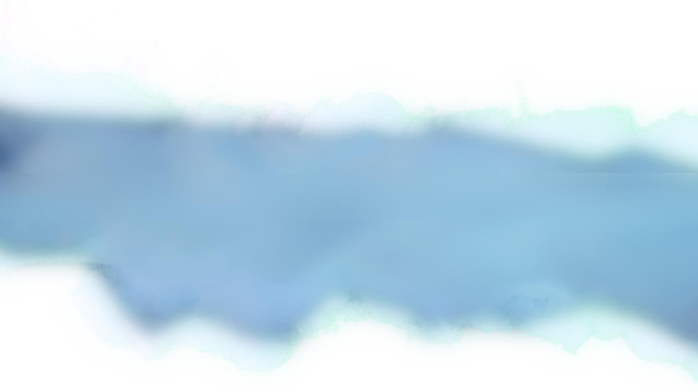

Spécialisés dans le stop-motion, nous imaginons et fabriquons des films sur mesure, entièrement faits main.
Un soupçon de poésie, une bonne dose de savoir-faire artisanal et une identité visuelle forte pour raconter vos histoires autrement.
Nos films
Un projet en tête ?
Et si on lui donnait vie, image par image ? Film, clip, publicité ou idée encore en train de germer : racontez-nous.